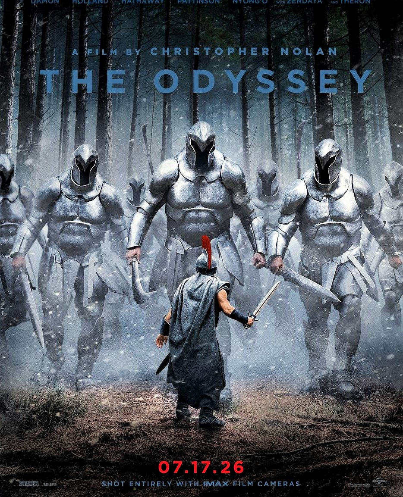

Blockbuster · Case 1 of 3
The Odyssey
Universal turned The Odyssey into a format event — IMAX 70mm tickets went on sale a year early — and that scarcity helped a $123.5M opening grow into about $1.82B worldwide.
- Studio
- Universal Pictures
- Release
- Jul 17, 2026
- Director
- Christopher Nolan
- Rating · genre · runtime
- R · Adventure · 172 min
- Audience score
- CinemaScore A · RT 94% / 97%
01
Did it work?
The result
Domestic total / opening weekend
$625.6M / $123.5M
Made $123.5M in its first weekend in the US and Canada and $625.6M there by the end of its run, plus $1.82B worldwide.
#2 of 6
Return on cost
4.9×
Every $1 spent making and marketing it ($250.0M + $125.0M) brought back $4.86 in worldwide ticket sales. Estimated profit: about $787.9M.
#3 of 5Marketing unverified
Beat the pre-release forecast
1.37×
Opened at $123.5M, 1.4 times what was expected. Predictions ran $80M–$100M.
#4 of 5
02
How was it received?
Critics vs. audience
Critic reviews
214 + 63
214 critics reviewed it on Rotten Tomatoes and 63 on Metacritic. More reviews means more press attention.
Review scores
94% · 88
94% of critics gave it a positive review and they averaged 88/100 on Metacritic. Opening-night audiences graded it A (CinemaScore).
#1 of 6
Critics vs. regular viewers
31-pt gap
Critics scored it 88/100; everyday Metacritic users gave it 57/100. On Rotten Tomatoes, 94% of critics and 97% of audiences liked it. Critics liked it far more than regular viewers. Its earliest fans on Letterboxd were glowing: 4.61★, 89% positive.
03
What was made
Production pull and budget efficiency
Production pull (score, cast, sets)
First on IMAX film
The first movie shot entirely on IMAX film cameras: 91 shoot days across 6 countries, real ships and 35-ft Trojan horses, a Ludwig Göransson score and an all-star cast.
Budget efficiency
7.3×
Earned 7.3 times its $250.0M production budget in worldwide ticket sales (marketing costs not included).
#5 of 6
Why it mattered and who it reached
Sold the big screen
Shooting on IMAX film gave fans a reason to pay more: premium screens earned 53% of the opening and IMAX alone $555M worldwide. It pulled in film lovers and Gen Z, who seek out premium formats, and 24% of audience posts talked about the filmmaking.
04
Who was in it and who they reached
Cast reach, amplification, pairing and fans
Cast reach
44% came for the cast
In opening-weekend surveys, 44% of viewers said the cast was a reason they came. On TikTok, videos naming Zendaya or Tom Holland reached about 3.4 times more people.
Cast amplification share
36%
Of 33,082 posts on X that named the cast or the director, 36% named the cast. Higher means the stars, not the filmmaker, drove the conversation.
Pairing lift
5.4×
TikToks featuring two or more stars together got 5.4 times the views of videos with just one star. One star alone did no better than none.
Fan participation
33%
A third of TikTok views came from everyday fans with under 10,000 followers, more than from big accounts. Most creator videos weren't paid.
05
How it was sold
Buzz, trust and premium formats
Scarcity = buzz (first reaction)
Jul 6 · 11 days out
Reactions were held until the London premiere, and the first teaser played only in theaters. On premiere day, posts hit 51 times a normal day.
Audience trust (influencer marketing)
81%
81% of opening-weekend viewers said they would definitely recommend it. Universal skipped influencer screenings and showed it to critics first. Early fan reviews were still 89% positive, with almost no 'overhyped' talk.
#2 of 5
Premium format share
53%
53% of opening-weekend ticket sales came from IMAX and other premium screens. IMAX alone brought in $555M worldwide, a record.
#1 of 5
06
Who showed up
Attendance, drivers and demographics
Attendance rate
$31,514
Each theater averaged this much in ticket sales on opening weekend, a sign of how full the screens were.
#2 of 6
Attendance drivers
51% for Nolan
Christopher Nolan was the top reason people came (51%), ahead of the cast (44%).
Demographics
59% male
55% were under 35 (about half aged 18–34). The audience was 50% white, 22% Hispanic, 12% Black and 9% Asian.
Cast effects on demographics
Cast + Nolan
Its young, fan-favorite stars (Zendaya, Tom Holland, Robert Pattinson) helped a three-hour epic draw about half its audience aged 18–34.
07
What people said online
Volume, sentiment, virality and UGC
Conversation volume
21,156
Posts on X around its release, and 2,159 more in the last 90 days. Its top 50 Reddit posts drew 2,363 comments.
#3 of 6
Audience sentiment
4.3★
Average rating out of 5 on Letterboxd, where 60% of users gave it 4.5 or 5 stars. 97% of Rotten Tomatoes audiences liked it. Early posts on Letterboxd and Reddit were 86% positive.
#1 of 6
Viral per platform
121.4M
Views of the first trailer in 24 hours, spread across TikTok (27%), YouTube (26%), Facebook (21%), Instagram (18%) and X (10%). Its 100 latest TikToks drew 4,394,334 plays.
User-generated content (UGC)
37 of 52
In one sample, 37 of 52 creator videos were made unpaid, many joking about Nolan's no-phones, no-CGI rules.
Small sample
08
Did it last?
Staying power
Best staying power
5.1×
Over its full run in the US it earned 5.1 times its opening weekend. Its second weekend was down 27% from the first. It jumped 65% when IMAX screens came back in week 13.
#4 of 6
All figures come from the team's Fall 2026 research. Rank badges compare all six films (#1 = highest). "Unverified" and "company-reported" mark figures not yet confirmed by an independent source.